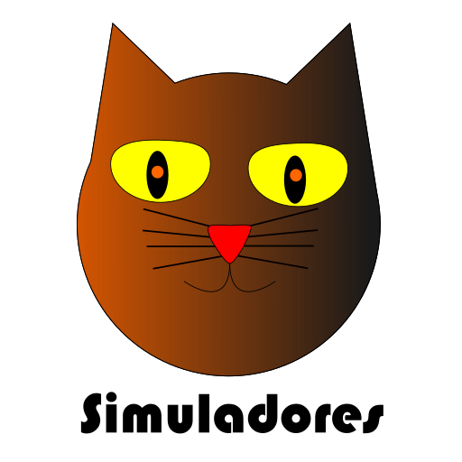
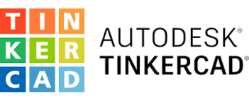
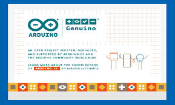

¿Qué son los simuladores?
En las ciencias, la simulación es el artificio contextual que hace referencia a la investigación de una hipótesis o un conjunto de hipótesis de trabajo utilizando modelos un método perfecto para la enseñanza y aprendizaje
Los simuladores reproducen sensaciones y experiencias que en la realidad pueden llegar a suceder.

Simuladores más usados
Los simuladores más usados son los siguientes:
-
KiCad:
KiCad es un paquete de programas independiente para la automatización del diseño electrónico. Permite la simulación de circuitos, el diseño de esquemáticos para circuitos electrónicos y su conversión a placa de circuito impreso.

-
Tinkercad:
A partir de que estuvo disponible en 2011, se convirtió en una plataforma famosa para generar modelos para impresión 3D, así como una introducción de grado de acceso a la geometría sólida constructiva en las escuelas. Además de una funcionalidad la cual permite la simulación de circuitos simples como forma de aprendizaje.

-
Arduino IDE:
El ámbito de desarrollo incluido de Arduino es una aplicación multiplataforma el cual tiene integrado la opción de simular el código que escribas para evitar errores que lleguen a ser peligrosos para la misma placa, el editor que está redactada en el lenguaje de programación Java.

-
mBlock:
mBlock es un ámbito de desarrollo visual con base en Scrach 2.0, creado para que nos dé la posibilidad de incorporar en el planeta de la robótica fácilmente. Este programa es de ingreso y repartición independiente por lo cual tenemos la posibilidad de descargarlo e instalarlo de forma gratuita.